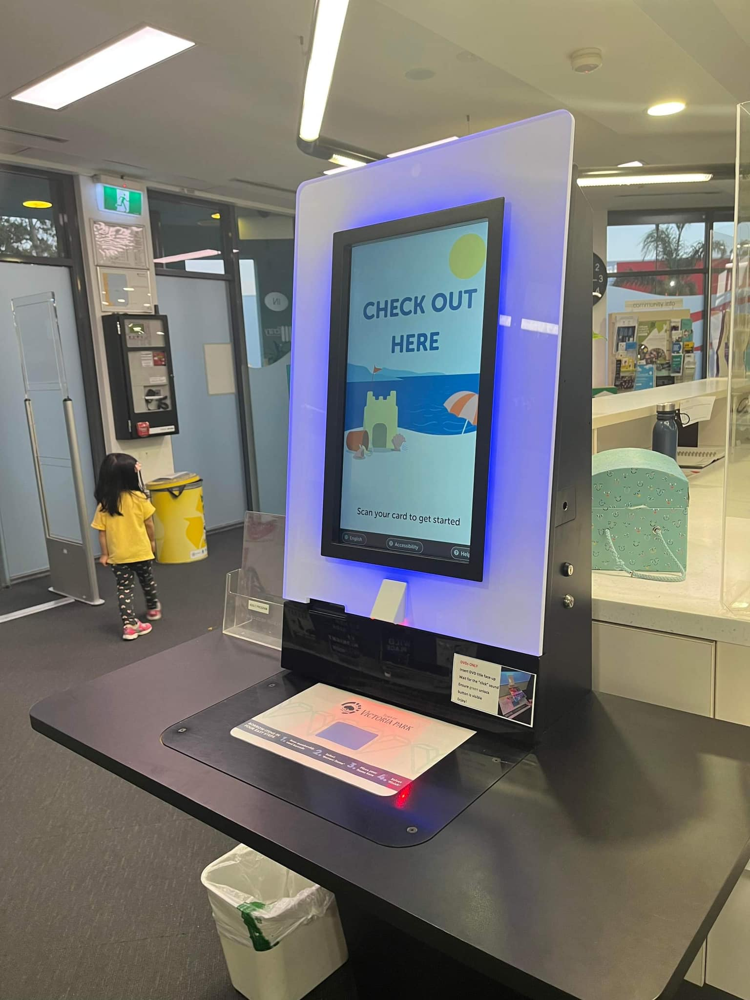

Bạn mình là Ts Nguyễn Thị Hoàng Phụng, người hiện đang ở Úc, đã chia sẻ hình ảnh của một “tour” đi vòng qua thư viện nơi chị ở.
Thư viện mở cửa từ 9h sáng đến 5 giờ (thứ 7), 6 giờ (3 ngày trong tuần) hoặc 8h tối (có 2 ngày trong tuần mở đến 8h tối). Cập nhật bối cảnh một chút ở Úc, là thường các shopping mall, siêu thị ..đóng cửa lúc 5h chiều, có nơi còn 4h chiều. Hồi đó mình đi học, chiều ra đã không còn chỗ mua đồ ăn, vì cứ tưởng dịch vụ như ở Việt Nam mình, là tối khuya còn bán hàng (^^) Nên hồi là sinh viên cao học bên Úc, bọn mình thường phải đi chợ thứ 7, chủ nhật để có đồ ăn trong tuần.
Ở thư viện, chị Phụng chia sẻ, bạn có thể check-in tự động, và trả sách (return) cũng tự động. Các ô này sẵn như thế (hình), mình cứ việc cho sách lên đó.
Trang thiết bị khá hiện đại, có máy tính cho người đọc tra cứu và sử dụng miễn phí, sách cũng đọc miễn phí, băng đĩa. Các dịch vụ khác như nước uống, nhà vệ sinh…đầy đủ, khá tiện nghi.
Ngoài ra, một người bạn khác của mình, bạn Thanh Phạm, là nhân viên y tế, hiện đang ở Canada, cũng chia sẻ về các dịch vụ của thư viện công cộng nơi bạn đang ở.
Thanh chia sẻ, mỗi khu dân cư đều có public library (thư viện công cộng) với vô số sách cũ, mới, nhiều thứ tiếng như Anh, Pháp và nhiều ngôn ngữ khác nữa. Thư viện khu dân cư bạn ở (Edmonton Public Library) làm thẻ miễn phí cho mọi người.
Tại thư viện, bạn có thể đọc tại chỗ hoặc mượn mang về, cũng có thể đặt trước qua app rồi đến lấy.
Ngoài ra, ở thư viện công cộng luôn có khu riêng cho trẻ em với nhiều hoạt động tiện ích, có máy tính và cả ipad. Điều thú vị là, Thanh nói, có cả một studio đầy đủ thiết bị, hoàn toàn miễn phí, dành cho việc thu âm và sáng tác. Ngoài ra còn có sân khấu cho hoạt động đọc sách, diễn kịch hoặc thuyết trình.
Thanh có chia sẻ hình ảnh của app giúp dễ tìm và đặt sách (có hình đính kèm bài). Theo Thanh, ở chỗ bạn ở, trẻ em mê đến thư viện. Ngoài ra, với việc nhà trường khuyến khích đọc sách, trẻ em được hình thành thói quen đọc sách từ đó.
Có lẽ những kỳ tới, mình sẽ chia sẻ thêm về những hoạt động hoặc thói quen mà các ba mẹ bạn bè mình đã làm được với con của họ, để các bé có thói quen đọc sách. Bạn có mong muốn được biết, hoặc có muốn chia sẻ với chúng mình cách của các bạn đã làm không?


